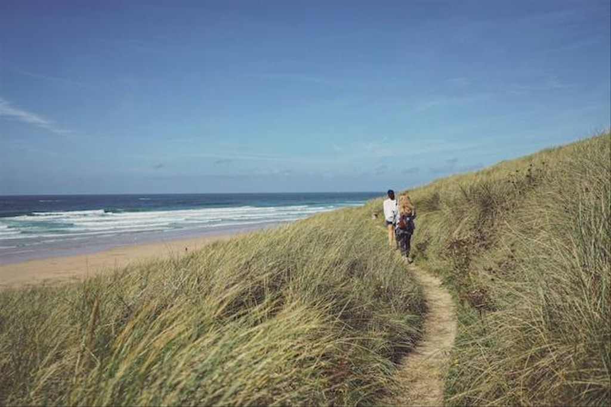

Bukit Hud Kebumen merupakan salah satu destinasi wisata alam yang menawarkan pemandangan samudera luas dari ketinggian bukit. Bukit ini juga dekat dengan Pantai Karang Bolong, yang merupakan salah satu tempat wisata populer di Kebumen.
Bagi yang belum pernah ke sana, sebaiknya simak dulu informasi menarik yang akan dibagikan pada artikel kali ini. Nantinya akan ada juga pembahasan mengenai cara ke sana, harga tiket masuk hingga jam operasional yang perlu diketahui wisatawan.
Mengutip laman perhutani.co.id, Bukit Hud merupakan wisata pantai berbukit yang terletak di Kebumen Selatan atau tepatnya di dusun Karang Tengah, Desa Karang Bolong, Kecamatan Buayan kabupaten Kebumen. Jika datang dari arah Yogyakarta, pengunjung dapat melewati jalur Wates-Purworejo-Kebumen. Apabila datang dari arah Purwokerto, sebelum Gombong, ada gapura arah Goa Jatijajar ikuti terus jalur tersebut di sepanjang jalan nantinya ada petunjuk arah menuju Bukit Hud atau ikut Gmaps.
Selain itu jika datang dari Jakarta dan sekitarnya, arahkan kendaraan lewat jalur selatan Kebumen, yakni Jalan Nasional III. Selanjutnya, ikuti jalan tersebut menuju Kebumen Kota. Kemudian, ambil arah ke Gombong dan ikuti jalan hingga menemukan pertigaan Cawang, lalu belok ke kanan menuju alun-alun Karang Bolong dan belok ke kanan sedikit lagi, lalu ikuti tanjakan hingga tiba di Bukit Hud.
Tempat wisata ini berjarak sekitar 30 km dari pusat kota Kebumen. Pengunjung bisa menggunakan kendaraan pribadi atau menyewa kendaraan dari kota terdekat untuk menuju ke sana. Selain itu bisa juga menggunakan transportasi umum seperti bus, tetapi harus turun di terminal dan melanjutkan perjalanan dengan transportasi umum lainnya.
Perlu diketahui harga tiket masuk Bukit Hud Kebumen sangat terjangkau yakni hanya sebesar Rp4.000 saja untuk satu orang dewasa dan Rp2.000 untuk anak-anak. Jam operasionalnya sendiri buka setiap hari selama 24 jam. Untuk daya tarik utamanya yakni pemandangan Samudera. Sebagai informasi, Bukit Hud memiliki ketinggian 150 meter di atas permukaan laut. Dari atas bukit tersebut, pengunjung nantinya dapat menikmati luasnya Samudera Hindia yang menghampar tanpa ada batu karang yang menghalangi.
Pengunjung juga bisa menyaksikan indahnya ombak yang bergulung-gulung seolah berkejaran satu sama lain. Pasir putih di sana juga menjadi pembatas indahnya lautan dan daratan, yang membentang luas dan panjang. Ditambah hijaunya pepohonan yang tumbuh lebat menjadikan kombinasi warna yang indah dan menenangkan siapapun yang memandang.
Pengunjung juga bisa menyaksikan indahnya ombak yang bergulung-gulung seolah berkejaran satu sama lain. Pasir putih di sana juga menjadi pembatas indahnya lautan dan daratan, yang membentang luas dan panjang. Ditambah hijaunya pepohonan yang tumbuh lebat menjadikan kombinasi warna yang indah dan menenangkan siapapun yang memandang.
